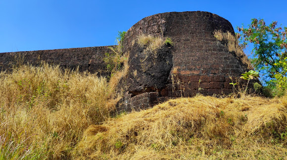
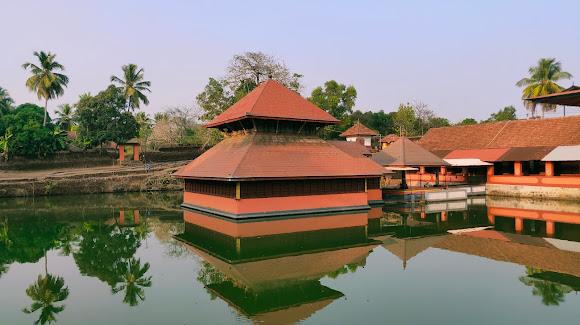
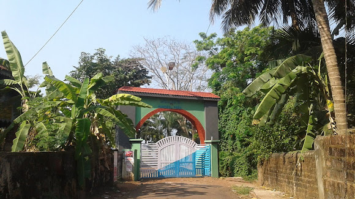
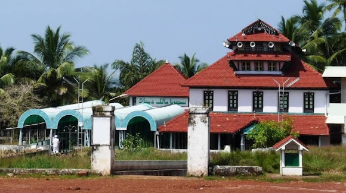

Chandragiri Fort
Chandragiri Fort is a fort built in the 17th century, situated in Kasaragod District of Kerala, South India. This large squarish fort is 150 feet above sea level and occupies an area of about seven acres adjacent to Chandragiri river. The fort is now in ruins.

sri.Ananthapadmanabhaswamy Temple
Ananthapadmanabhaswamy Temple or Anantha Lake Temple is a Hindu temple built in the middle of a lake in the little village of Ananthapura, around 6 km from the town of Kumbla in Manjeshwaram Taluk of Kasaragod District of Kerala, South India.

sea view park
park and garden

malik dineer juma masjid
Malik Dinar Mosque is the second oldest mosque in India, situated in Thalangara in Kasaragod town of Kerala state, south India.